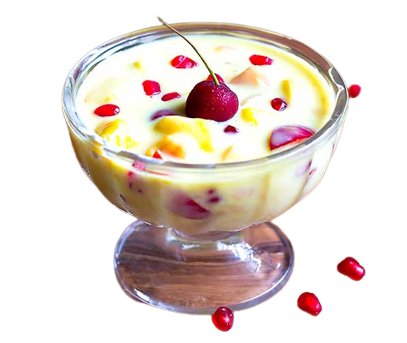

⍭ Fruit Custurd ⍭
Ingredients:
- 2 cups milk
- 3 tbsp custard powder
- 4 tbsp sugar (adjust to taste)
- Assorted fruits (banana, mango, pomegranate pearls, plums, strawberries, apple, pineapple, cherries)
- A pinch of cardamom powder (optional)
- Chopped nuts (almonds, pistachios) for garnishing
Steps:
- Mix 3 tbsp custard powder with a little milk to form a paste. Set aside.
- In a saucepan, heat remaining milk. Stir in sugar until dissolved.
- Pour custard paste into milk, stirring to prevent lumps. Cook until thickened, about 5-7 minutes.
- Remove custard from heat. Once cooled, add assorted fruits (chopped) and cardamom powder (optional).
- Pour fruit custard into bowls, garnish with chopped nuts. And the custurd is ready!